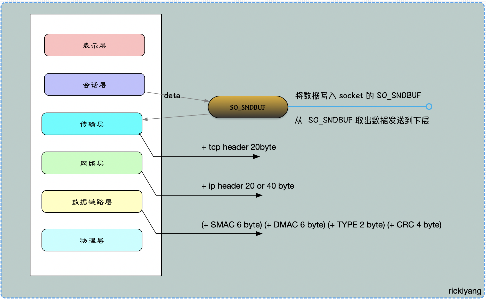
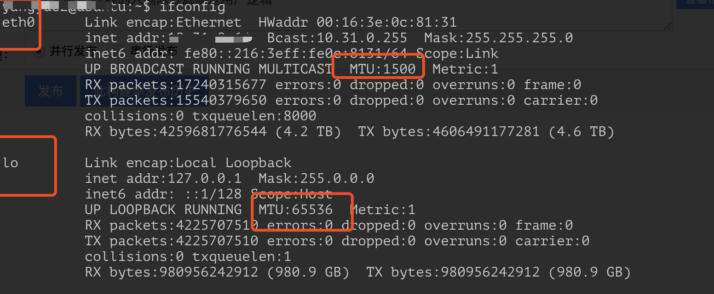
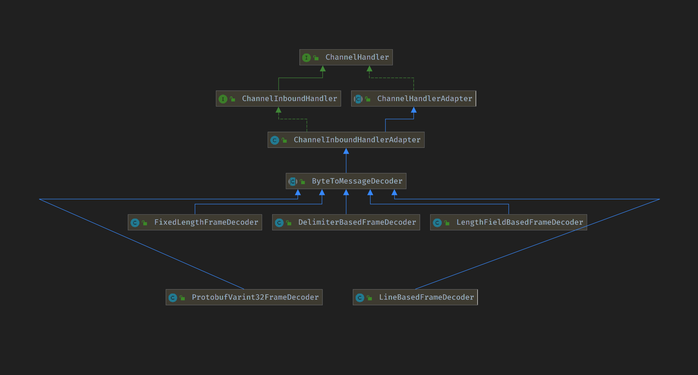

我们都知道TCP是基于字节流的传输协议。那么数据在通信层传播其实就像河水一样并没有明显的分界线，而数据具体表示什么意思什么地方有句号什么地方有分号这个对于TCP底层来说并不清楚。应用层向TCP层发送用于网间传输的、用8位字节表示的数据流，然后TCP把数据流分区成适当长度的报文段，之后TCP把结果包传给IP层，由它来通过网络将包传送给接收端实体的TCP层。所以对于这个数据拆分成大包小包的问题就是我们今天要讲的粘包和拆包的问题。
粘包拆包
Netty 底层是基于 TCP 协议来处理网络数据传输。我们知道 TCP 协议是面向字节流的协议，数据像流水一样在网络中传输那何来 “包” 的概念呢？
TCP是四层协议不负责数据逻辑的处理，但是数据在TCP层 “流” 的时候为了保证安全和节约效率会把 “流” 做一些分包处理，比如：
- 发送方约定了每次数据传输的最大包大小，超过该值的内容将会被拆分成两个包发送；
- 发送端 和 接收端 约定每次发送数据包长度并随着网络状况动态调整接收窗口大小，这里也会出现拆包的情况；
Netty 本身是基于 TCP 协议做的处理，如果它不去对 “流” 进行处理，到底这个 “流” 从哪到哪才是完整的数据就是个迷。我们先来看在 TCP 协议中有哪些步骤可能会让 “流” 不完整或者是出现粘滞的可能。
粘包/拆包的原因
我们知道在TCP协议中，应用数据分割成TCP认为最适合发送的数据块，这部分是通过“MSS”（最大数据包长度）选项来控制的，通常这种机制也被称为一种协商机制，MSS规定了TCP传往另一端的最大数据块的长度。这个值TCP协议在实现的时候往往用MTU值代替（需要减去IP数据包包头的大小20Bytes和TCP数据段的包头20Bytes）所以往往MSS为1460。通讯双方会根据双方提供的MSS值得最小值确定为这次连接的最大MSS值。
tcp为提高性能，发送端会将需要发送的数据发送到缓冲区，等待缓冲区满了之后，再将缓冲中的数据发送到接收方。同理，接收方也有缓冲区这样的机制，来接收数据。
简单的说：
应用程序写入数据的字节大小大于套接字发送缓冲区的大小将发生拆包；
进行MSS大小的TCP分段。MSS是TCP报文段中的数据字段的最大长度，当TCP报文长度-TCP头部长度>mss的时候将发生拆包；
应用程序写入数据小于套接字缓冲区大小，网卡将应用多次写入的数据发送到网络上,将发生粘包；
数据包大于MTU的时候将会进行切片。
MTU即(Maxitum Transmission Unit) 最大传输单元,由于以太网传输电气方面的限制，每个以太网帧都有最小的大小64bytes最大不能超过1518bytes,刨去以太网帧的帧头14Bytes和帧尾CRC校验部分4Bytes,那么剩下承载上层协议的地方也就是Data域最大就只能有1500Bytes这个值我们就把它称之为MTU。这个就是网络层协议非常关心的地方，因为网络层协议比如IP协议会根据这个值来决定是否把上层传下来的数据进行分片。
下面细致讲解其中核心原因：
数据流在TCP协议下传播，因为协议本身对于流有一些规则的限制，这些规则会导致当前对端接收到的数据包不完整，归结原因有下面三种情况：
- Socket 缓冲区与滑动窗口
- MSS/MTU限制
- Nagle算法
Socket缓冲区与滑动窗口
对于 TCP 协议而言，它传输数据是基于字节流传输的。应用层在传输数据时，实际上会先将数据写入到 TCP 套接字的缓冲区，当缓冲区被写满后，数据才会被写出去。每个TCP Socket 在内核中都有一个发送缓冲区(SO_SNDBUF )和一个接收缓冲区(SO_RCVBUF)，TCP 的全双工的工作模式以及 TCP 的滑动窗口便是依赖于这两个独立的 buffer 以及此 buffer 的填充状态。
SO_SNDBUF：
进程发送的数据的时候假设调用了一个 send 方法，将数据拷贝进入 Socket 的内核发送缓冲区之中，然后 send 便会在上层返回。换句话说，send 返回之时，数据不一定会发送到对端去(和write写文件有点类似)，send 仅仅是把应用层 buffer 的数据拷贝进 Socket 的内核发送 buffer 中。
SO_RCVBUF：
把接收到的数据缓存入内核，应用进程一直没有调用 read 进行读取的话，此数据会一直缓存在相应 Socket 的接收缓冲区内。不管进程是否读取 Socket，对端发来的数据都会经由内核接收并且缓存到 Socket 的内核接收缓冲区之中。read 所做的工作，就是把内核缓冲区中的数据拷贝到应用层用户的 buffer 里面，仅此而已。
接收缓冲区保存收到的数据一直到应用进程读走为止。对于 TCP，如果应用进程一直没有读取，buffer 满了之后发生的动作是：通知对端 TCP 协议中的窗口关闭。这个便是滑动窗口的实现。保证 TCP 套接口接收缓冲区不会溢出，从而保证了 TCP 是可靠传输。因为对方不允许发出超过所通告窗口大小的数据。 这就是 TCP 的流量控制，如果对方无视窗口大小而发出了超过窗口大小的数据，则接收方 TCP 将丢弃它。
滑动窗口：
TCP连接在三次握手的时候，会将自己的窗口大小(window size)发送给对方，其实就是 SO_RCVBUF 指定的值。之后在发送数据的时，发送方必须要先确认接收方的窗口没有被填充满，如果没有填满，则可以发送。
每次发送数据后，发送方将自己维护的对方的 window size 减小，表示对方的 SO_RCVBUF 可用空间变小。
当接收方处理开始处理 SO_RCVBUF 中的数据时，会将数据从 Socket 在内核中的接受缓冲区读出，此时接收方的 SO_RCVBUF 可用空间变大，即 window size 变大，接受方会以 ack 消息的方式将自己最新的 window size 返回给发送方，此时发送方将自己的维护的接受的方的 window size 设置为ack消息返回的 window size。
此外，发送方可以连续的给接受方发送消息，只要保证对方的 SO_RCVBUF 空间可以缓存数据即可，即 window size>0。当接收方的 SO_RCVBUF 被填充满时，此时 window size=0，发送方不能再继续发送数据，要等待接收方 ack 消息，以获得最新可用的 window size。
MSS/MTU分片
MTU (Maxitum Transmission Unit,最大传输单元)是链路层对一次可以发送的最大数据的限制。MSS(Maxitum Segment Size,最大分段大小)是 TCP 报文中 data 部分的最大长度，是传输层对一次可以发送的最大数据的限制。

数据在传输过程中，每经过一层，都会加上一些额外的信息：
- 应用层：只关心发送的数据 data，将数据写入 Socket 在内核中的缓冲区 SO_SNDBUF 即返回，操作系统会将 SO_SNDBUF 中的数据取出来进行发送；
- 传输层：会在 data 前面加上 TCP Header(20字节)；
- 网络层：会在 TCP 报文的基础上再添加一个 IP Header，也就是将自己的网络地址加入到报文中。IPv4 中 IP Header 长度是 20 字节，IPV6 中 IP Header 长度是 40 字节；
- 链路层：加上 Datalink Header 和 CRC。会将 SMAC(Source Machine，数据发送方的MAC地址)，DMAC(Destination Machine，数据接受方的MAC地址 )和 Type 域加入。SMAC+DMAC+Type+CRC 总长度为 18 字节；
- 物理层：进行传输。
在回顾这个基本内容之后，再来看 MTU 和 MSS。MTU 是以太网传输数据方面的限制，每个以太网帧最大不能超过 1518bytes。刨去以太网帧的帧头(DMAC+SMAC+Type域) 14Bytes 和帧尾 (CRC校验 ) 4 Bytes，那么剩下承载上层协议的地方也就是 data 域最大就只能有 1500 Bytes 这个值 我们就把它称之为 MTU。
MSS 是在 MTU 的基础上减去网络层的 IP Header 和传输层的 TCP Header 的部分，这就是 TCP 协议一次可以发送的实际应用数据的最大大小。
CopyMSS = MTU(1500) -IP Header(20 or 40)-TCP Header(20) 由于 IPV4 和 IPV6 的长度不同，在 IPV4 中，以太网 MSS 可以达到 1460byte。在 IPV6 中，以太网 MSS 可以达到 1440byte。
发送方发送数据时，当 SO_SNDBUF 中的数据量大于 MSS 时，操作系统会将数据进行拆分，使得每一部分都小于 MSS，也形成了拆包。然后每一部分都加上 TCP Header，构成多个完整的 TCP 报文进行发送，当然经过网络层和数据链路层的时候，还会分别加上相应的内容。
另外需要注意的是：对于本地回环地址(lookback)不需要走以太网，所以不受到以太网 MTU=1500 的限制。linux 服务器上输入 ifconfig 命令，可以查看不同网卡的 MTU 大小，如下：

上图显示了 2 个网卡信息：
- eth0 需要走以太网，所以 MTU 是 1500；
- lo 是本地回环，不需要走以太网，所以不受 1500 的限制。
Nagle 算法
TCP/IP 协议中，无论发送多少数据，总是要在数据(data)前面加上协议头(TCP Header+IP Header)，同时，对方接收到数据，也需要发送 ACK 表示确认。
即使从键盘输入的一个字符，占用一个字节，可能在传输上造成 41 字节的包，其中包括 1 字节的有用信息和 40 字节的首部数据。这种情况转变成了 4000% 的消耗，这样的情况对于重负载的网络来是无法接受的。称之为”糊涂窗口综合征”。
为了尽可能的利用网络带宽，TCP 总是希望尽可能的发送足够大的数据。(一个连接会设置 MSS 参数，因此，TCP/IP 希望每次都能够以 MSS 尺寸的数据块来发送数据)。Nagle 算法就是为了尽可能发送大块数据，避免网络中充斥着许多小数据块。
Nagle 算法的基本定义是任意时刻，最多只能有一个未被确认的小段。 所谓 “小段”，指的是小于 MSS 尺寸的数据块；所谓“未被确认”，是指一个数据块发送出去后，没有收到对方发送的 ACK 确认该数据已收到。
Nagle 算法的规则：
- 如果 SO_SNDBUF 中的数据长度达到 MSS，则允许发送；
- 如果该 SO_SNDBUF 中含有 FIN，表示请求关闭连接，则先将 SO_SNDBUF 中的剩余数据发送，再关闭；
- 设置了
TCP_NODELAY=true选项，则允许发送。TCP_NODELAY 是取消 TCP 的确认延迟机制，相当于禁用了 Negale 算法。正常情况下，当 Server 端收到数据之后，它并不会马上向 client 端发送 ACK，而是会将 ACK 的发送延迟一段时间(一般是 40ms)，它希望在 t 时间内 server 端会向 client 端发送应答数据，这样 ACK 就能够和应答数据一起发送，就像是应答数据捎带着 ACK 过去。当然，TCP 确认延迟 40ms 并不是一直不变的， TCP 连接的延迟确认时间一般初始化为最小值 40ms，随后根据连接的重传超时时间(RTO)、上次收到数据包与本次接收数据包的时间间隔等参数进行不断调整。另外可以通过设置 TCP_QUICKACK 选项来取消确认延迟； - 未设置 TCP_CORK 选项时，若所有发出去的小数据包(包长度小于MSS)均被确认，则允许发送；
- 上述条件都未满足，但发生了超时(一般为200ms)，则立即发送。
基于以上问题，TCP层肯定是会出现当次接收到的数据是不完整数据的情况。出现粘包可能的原因有：
- 发送方每次写入数据 < 套接字缓冲区大小；
- 接收方读取套接字缓冲区数据不够及时。
出现半包的可能原因有：
- 发送方每次写入数据 > 套接字缓冲区大小；
- 发送的数据大于协议 MTU，所以必须要拆包。
解决问题肯定不是在4层来做而是在应用层，通过定义通信协议来解决粘包和拆包的问题。发送方 和 接收方约定某个规则：
- 当发生粘包的时候通过某种约定来拆包；
- 如果在拆包，通过某种约定来将数据组成一个完整的包处理。
粘包/拆包的解决方案
我们知道tcp是无界的数据流，且协议本身无法避免粘包，拆包的发生，那我们只能在应用层数据协议上，加以控制。通常在制定传输数据时，简单的说：
- 设置定长消息，服务端每次读取既定长度的内容作为一条完整消息；
- 使用带消息头的协议、消息头存储消息开始标识及消息长度信息，服务端获取消息头的时候解析出消息长度，然后向后读取该长度的内容；
- 设置消息边界，服务端从网络流中按消息边界分离出消息内容。比如在消息末尾加上换行符用以区分消息结束。
各个方案细讲：
定长协议
指定一个报文具有固定长度。比如约定一个报文的长度是 5 字节，那么：
报文：1234，只有4字节，但是还差一个怎么办呢，不足部分用空格补齐。就变为：1234 。
如果不补齐空格，那么就会读到下一个报文的字节来填充上一个报文直到补齐为止，这样粘包了。
定长协议的优点是使用简单，缺点很明显：浪费带宽。
Netty 中提供了 FixedLengthFrameDecoder ，支持把固定的长度的字节数当做一个完整的消息进行解码。
特殊字符分割协议
很好理解，在每一个你认为是一个完整的包的尾部添加指定的特殊字符，比如：\n，\r等等。
需要注意的是：约定的特殊字符要保证唯一性，不能出现在报文的正文中，否则就将正文一分为二了。
Netty 中提供了 DelimiterBasedFrameDecoder 根据特殊字符进行解码，LineBasedFrameDecoder默认以换行符作为分隔符。
变长协议
变长协议的核心就是：将消息分为消息头和消息体，消息头中标识当前完整的消息体长度。
- 发送方在发送数据之前先获取数据的二进制字节大小，然后在消息体前面添加消息大小；
- 接收方在解析消息时先获取消息大小，之后必须读到该大小的字节数才认为是完整的消息。
Netty 中提供了 LengthFieldBasedFrameDecoder ，通过LengthFieldPrepender 来给实际的消息体添加 length 字段。
Netty中都有相应的编码解码器来实现！！
粘包的演示
演示客户端发送多条消息，使用 Netty 自定义的 ByteBuf 作为传输数据格式，看看服务端接收数据是否是按每次发送的条数来接收还是按照当前缓冲区大小来接收。
主要代码：
Server:
package com.zhangkx.learn.packageEvent1;
import io.netty.bootstrap.ServerBootstrap;
import io.netty.channel.ChannelFuture;
import io.netty.channel.EventLoopGroup;
import io.netty.channel.nio.NioEventLoopGroup;
import io.netty.channel.socket.nio.NioServerSocketChannel;
import lombok.extern.slf4j.Slf4j;
/**
* @author: zhangkx
* @date: 2020/3/15
* @description: server 端
*/
@Slf4j
public class PeServer {
private int port;
public PeServer(int port) {
this.port = port;
}
public void start(){
EventLoopGroup bossGroup = new NioEventLoopGroup();
EventLoopGroup workGroup = new NioEventLoopGroup();
ServerBootstrap server = new ServerBootstrap().group(bossGroup,workGroup)
.channel(NioServerSocketChannel.class)
.childHandler(new ServerChannelInitializer());
try {
ChannelFuture future = server.bind(port).sync();
future.channel().closeFuture().sync();
} catch (InterruptedException e) {
log.error("server start fail",e);
}finally {
bossGroup.shutdownGracefully();
workGroup.shutdownGracefully();
}
}
public static void main(String[] args) {
PeServer server = new PeServer(7788);
server.start();
}
}ServerInitialzr:
package com.zhangkx.learn.packageEvent1;
import io.netty.channel.ChannelInitializer;
import io.netty.channel.ChannelPipeline;
import io.netty.channel.socket.SocketChannel;
/**
* @author: zhangkx
* @date: 2020/3/15
* @description:
*/
public class ServerChannelInitializer extends ChannelInitializer<SocketChannel> {
@Override
protected void initChannel(SocketChannel socketChannel) throws Exception {
ChannelPipeline pipeline = socketChannel.pipeline();
// 自己的逻辑Handler
pipeline.addLast("handler", new PeServerHandler());
}
}ServerHandler:
package com.zhangkx.learn.packageEvent1;
import io.netty.buffer.ByteBuf;
import io.netty.buffer.Unpooled;
import io.netty.channel.ChannelHandlerContext;
import io.netty.channel.SimpleChannelInboundHandler;
import lombok.extern.slf4j.Slf4j;
import java.nio.charset.StandardCharsets;
/**
* @author: zhangkx
* @date: 2020/3/15
* @description:
*/
@Slf4j
public class PeServerHandler extends SimpleChannelInboundHandler {
private int counter;
@Override
public void channelActive(ChannelHandlerContext ctx) throws Exception {
log.info("server channelActive");
}
@Override
protected void channelRead0(ChannelHandlerContext ctx, Object msg) throws Exception {
ByteBuf buf = (ByteBuf) msg;
byte[] req = new byte[buf.readableBytes()];
buf.readBytes(req);
String body = new String(req, StandardCharsets.UTF_8);
System.out.println("-----start------\n"+ body + "\n------end------");
String content = "receive" + ++counter;
ByteBuf resp = Unpooled.copiedBuffer(content.getBytes());
ctx.writeAndFlush(resp);
}
@Override
public void exceptionCaught(ChannelHandlerContext ctx, Throwable cause) throws Exception {
super.exceptionCaught(ctx, cause);
ctx.close();
}
}服务端的 handler 主要逻辑是接收客户端发送过来的数据，看看是否是一条一条接收。然后每次接收到数据之后给客户端回复一个确认消息。
Client:
package com.zhangkx.learn.packageEvent1;
import io.netty.bootstrap.Bootstrap;
import io.netty.channel.ChannelFuture;
import io.netty.channel.ChannelOption;
import io.netty.channel.EventLoopGroup;
import io.netty.channel.nio.NioEventLoopGroup;
import io.netty.channel.socket.nio.NioSocketChannel;
import lombok.extern.slf4j.Slf4j;
/**
* @author: zhangkx
* @date: 2020/3/15
* @description:
*/
@Slf4j
public class PeClient {
private int port;
private String address;
public PeClient(int port, String address) {
this.port = port;
this.address = address;
}
public void start(){
EventLoopGroup group = new NioEventLoopGroup();
Bootstrap bootstrap = new Bootstrap();
bootstrap.group(group)
.channel(NioSocketChannel.class)
.option(ChannelOption.TCP_NODELAY, true)
.handler(new ClientChannelInitializer());
try {
ChannelFuture future = bootstrap.connect(address,port).sync();
future.channel().writeAndFlush("Hello world, i'm online");
future.channel().closeFuture().sync();
} catch (Exception e) {
log.error("client start fail",e);
}finally {
group.shutdownGracefully();
}
}
public static void main(String[] args) {
PeClient client = new PeClient(7788,"127.0.0.1");
client.start();
}
}ClientInitializer:
package com.zhangkx.learn.packageEvent1;
import io.netty.channel.ChannelInitializer;
import io.netty.channel.ChannelPipeline;
import io.netty.channel.socket.SocketChannel;
public class ClientChannelInitializer extends ChannelInitializer<SocketChannel> {
@Override
protected void initChannel(SocketChannel socketChannel) throws Exception {
ChannelPipeline pipeline = socketChannel.pipeline();
// 客户端的逻辑
pipeline.addLast("handler", new PeClientHandler());
}
}ClientHandler:
package com.zhangkx.learn.packageEvent1;
import io.netty.buffer.ByteBuf;
import io.netty.buffer.Unpooled;
import io.netty.channel.ChannelHandlerContext;
import io.netty.channel.SimpleChannelInboundHandler;
import lombok.extern.slf4j.Slf4j;
import java.nio.charset.StandardCharsets;
/**
* @author: zhangkx
* @date: 2020/3/15
* @description:
*/
@Slf4j
public class PeClientHandler extends SimpleChannelInboundHandler {
private int counter;
@Override
protected void channelRead0(ChannelHandlerContext ctx, Object msg) throws Exception {
ByteBuf buf = (ByteBuf) msg;
byte[] req = new byte[buf.readableBytes()];
buf.readBytes(req);
String body = new String(req, StandardCharsets.UTF_8);
System.out.println(body + " count:" + ++counter + "----end----\n");
}
@Override
public void channelActive(ChannelHandlerContext ctx) throws Exception {
log.info("client channelActive");
byte[] req = ("我是一条测试消息，快来读我吧，啦啦啦").getBytes();
for (int i = 0; i < 100; i++) {
ByteBuf message = Unpooled.buffer(req.length);
message.writeBytes(req);
ctx.writeAndFlush(message);
}
}
@Override
public void channelInactive(ChannelHandlerContext ctx) throws Exception {
log.info("Client is close");
}
}客户端 handler 主要逻辑是：循环100次给服务端发送测试消息。接收服务端的确认消息。
启动项目之后我们来看看客户端 和 服务端分别收到的消息结果：
服务端接收到的消息：
-----start------
我是一条测试消息，快来读我吧，啦啦啦我是一条测试消息，快来读我吧，啦啦啦我是一条测试消息，快来读我吧，啦啦啦我是一条测试消息，快来读我吧，啦啦啦我是一条测试消息，快来读我吧，啦啦啦我是一条测试消息，快来读我吧，啦啦啦我是一条测试消息，快来读我吧，啦啦啦我是一条测试消息，快来读我吧，啦啦啦我是一条测试消息，快来读我吧，啦啦啦我是一条测试消息，快来读我吧，啦啦啦我是一条测试消息，快来读我吧，啦啦啦我是一条测试消息，快来读我吧，啦啦啦我是一条测试消息，快来读我吧，啦啦啦我是一条测试消息，快来读我吧，啦啦啦我是一条测试消息，快来读我吧，啦啦啦我是一条测试消息，快来读我吧，啦啦啦我是一条测试消息，快来读我吧，啦啦啦我是一条测试消息，快来读我吧，啦啦啦我是一条测试消息，快来读我吧，啦啦�
------end------
-----start------
��我是一条测试消息，快来读我吧，啦啦啦我是一条测试消息，快来读我吧，啦啦啦我是一条测试消息，快来读我吧，啦啦啦我是一条测试消息，快来读我吧，啦啦啦我是一条测试消息，快来读我吧，啦啦啦我是一条测试消息，快来读我吧，啦啦啦我是一条测试消息，快来读我吧，啦啦啦我是一条测试消息，快来读我吧，啦啦啦我是一条测试消息，快来读我吧，啦啦啦我是一条测试消息，快来读我吧，啦啦啦我是一条测试消息，快来读我吧，啦啦啦我是一条测试消息，快来读我吧，啦啦啦我是一条测试消息，快来读我吧，啦啦啦我是一条测试消息，快来读我吧，啦啦啦我是一条测试消息，快来读我吧，啦啦啦我是一条测试消息，快来读我吧，啦啦啦我是一条测试消息，快来读我吧，啦啦啦我是一条测试消息，快来读我吧，啦啦啦我是一条测试消息，快来读我吧，啦�
------end------
-----start------
�啦我是一条测试消息，快来读我吧，啦啦啦我是一条测试消息，快来读我吧，啦啦啦我是一条测试消息，快来读我吧，啦啦啦我是一条测试消息，快来读我吧，啦啦啦我是一条测试消息，快来读我吧，啦啦啦我是一条测试消息，快来读我吧，啦啦啦我是一条测试消息，快来读我吧，啦啦啦我是一条测试消息，快来读我吧，啦啦啦我是一条测试消息，快来读我吧，啦啦啦我是一条测试消息，快来读我吧，啦啦啦我是一条测试消息，快来读我吧，啦啦啦我是一条测试消息，快来读我吧，啦啦啦我是一条测试消息，快来读我吧，啦啦啦我是一条测试消息，快来读我吧，啦啦啦我是一条测试消息，快来读我吧，啦啦啦我是一条测试消息，快来读我吧，啦啦啦我是一条测试消息，快来读我吧，啦啦啦我是一条测试消息，快来读我吧，啦啦啦我是一条测试消息，快来读我吧，啦
------end------
-----start------
啦啦我是一条测试消息，快来读我吧，啦啦啦我是一条测试消息，快来读我吧，啦啦啦我是一条测试消息，快来读我吧，啦啦啦我是一条测试消息，快来读我吧，啦啦啦我是一条测试消息，快来读我吧，啦啦啦我是一条测试消息，快来读我吧，啦啦啦我是一条测试消息，快来读我吧，啦啦啦我是一条测试消息，快来读我吧，啦啦啦我是一条测试消息，快来读我吧，啦啦啦我是一条测试消息，快来读我吧，啦啦啦我是一条测试消息，快来读我吧，啦啦啦我是一条测试消息，快来读我吧，啦啦啦我是一条测试消息，快来读我吧，啦啦啦我是一条测试消息，快来读我吧，啦啦啦我是一条测试消息，快来读我吧，啦啦啦我是一条测试消息，快来读我吧，啦啦啦我是一条测试消息，快来读我吧，啦啦啦我是一条测试消息，快来读我吧，啦啦啦我是一条测试消息，快来读我吧，�
------end------
-----start------
��啦啦我是一条测试消息，快来读我吧，啦啦啦我是一条测试消息，快来读我吧，啦啦啦我是一条测试消息，快来读我吧，啦啦啦我是一条测试消息，快来读我吧，啦啦啦我是一条测试消息，快来读我吧，啦啦啦我是一条测试消息，快来读我吧，啦啦啦我是一条测试消息，快来读我吧，啦啦啦我是一条测试消息，快来读我吧，啦啦啦我是一条测试消息，快来读我吧，啦啦啦我是一条测试消息，快来读我吧，啦啦啦我是一条测试消息，快来读我吧，啦啦啦我是一条测试消息，快来读我吧，啦啦啦我是一条测试消息，快来读我吧，啦啦啦我是一条测试消息，快来读我吧，啦啦啦我是一条测试消息，快来读我吧，啦啦啦我是一条测试消息，快来读我吧，啦啦啦我是一条测试消息，快来读我吧，啦啦啦我是一条测试消息，快来读我吧，啦啦啦我是一条测试消息，快来读我吧�
------end------
-----start------
�啦啦啦我是一条测试消息，快来读我吧，啦啦啦我是一条测试消息，快来读我吧，啦啦啦我是一条测试消息，快来读我吧，啦啦啦我是一条测试消息，快来读我吧，啦啦啦我是一条测试消息，快来读我吧，啦啦啦
------end------这里能看到多条消息被粘到一起发送了。
客户端接收到服务端回传的消息：
receive1receive2receive3receive4receive5 count:1----end----
receive6 count:2----end----服务端收到 6 次消息，所以回复了 6 次，同样客户端接收消息也出现粘包的现象。
因为我们并没有对数据包做任何声明，站在 TCP 协议端看， Netty 属于应用层，我们上面的示例代码中未对原始的数据包做任何处理。
Netty的处理方案
处理 TCP 粘包的唯一方法就是制定应用层的数据通讯协议，通过协议来规范现有接收的数据是否满足消息数据的需要。
Netty 提供的能力
为了解决网络数据流的拆包粘包问题，Netty 为我们内置了如下的解码器：
- ByteToMessageDecoder：如果想实现自己的半包解码器，实现该类；
- MessageToMessageDecoder：一般作为二次解码器，当我们在 ByteToMessageDecoder 将一个 bytes 数组转换成一个 java 对象的时候，我们可能还需要将这个对象进行二次解码成其他对象，我们就可以继承这个类；
- LineBasedFrameDecoder：通过在包尾添加回车换行符 \r\n 来区分整包消息；
- StringDecoder：字符串解码器；
- DelimiterBasedFrameDecoder：特殊字符作为分隔符来区分整包消息；
- FixedLengthFrameDecoder：报文大小固定长度，不够空格补全；
- ProtoBufVarint32FrameDecoder：通过 Protobuf 解码器来区分整包消息；
- ProtobufDecoder： Protobuf 解码器；
- LengthFieldBasedFrameDecoder：指定长度来标识整包消息，通过在包头指定整包长度来约定包长。
Netty 还内置了如下的编码器：
- ProtobufEncoder：Protobuf 编码器；
- MessageToByteEncoder：将 Java 对象编码成 ByteBuf；
- MessageToMessageEncoder：如果不想将 Java 对象编码成 ByteBuf，而是自定义类就继承这个；
- LengthFieldPrepender：LengthFieldPrepender 是一个非常实用的工具类，如果我们在发送消息的时候采用的是：消息长度字段+原始消息的形式，那么我们就可以使用 LengthFieldPrepender。这是因为 LengthFieldPrepender 可以将待发送消息的长度（二进制字节长度）写到 ByteBuf 的前两个字节。
编解码相关类结构图如下：

上面的类关系能看到所有的自定义解码器都是继承自 ByteToMessageDecoder。
在Netty 中 Decoder 主要分为两大类：
- 一种是将字节流转换为某种协议的数据格式：
ByteToMessageDecoder和ReplayingDecoder； - 一种是将一直协议的数据转为另一种协议的数据格式：
MessageToMessageDecoder。
将字节流转为对象是一种很常见的操作，也是一个消息框架应该提供的基础功能。因为 Decoder 的作用是将输入的数据解析成特定协议，上图中可以看到所有的 Decoder 都实现了 ChannelInboundHandler接口。在应用层将 byte 转为 message 的难度在于如何确定当前的包是一个完整的数据包，有两种方案可以实现：
- 监听当前 socket 的线程一直等待，直到收到的 byte 可以完成的构成一个包为止。这种方式的弊端就在于要浪费一个线程去等。
- 第二种方案是为每个监听的 socket 都构建一个本地缓存，当前监听线程如果遇到字节数不够的情况就先将获取到的数据存入缓存，继而处理别的请求，等到这里有数据的时候再来将新数据继续写入缓存直到数据构成一个完整的包取出。
ByteToMessageDecoder
ByteToMessageDecoder 采用的是第二种方案。在 ByteToMessageDecoder 中有一个对象 ByteBuf，该对象用于存储当前 Decoder接收到的 byte 数据。
public abstract class ByteToMessageDecoder extends ChannelInboundHandlerAdapter {
// 用来保存累计读取到的字节. 我们读到的新字节会保存(缓冲)在这里
ByteBuf cumulation;
// 用来做累计的，负责将读到的新字节写入 cumulation，有两个实现 MERGE_CUMULATOR 和 COMPOSITE_CUMULATOR
private Cumulator cumulator = MERGE_CUMULATOR;
//设置为true后, 单个解码器只会解码出一个结果
private boolean singleDecode;
private boolean decodeWasNull;
//是否是第一次读取数据
private boolean first;
//多少次读取后, 丢弃数据 默认16次
private int discardAfterReads = 16;
//已经累加了多少次数据
private int numReads;
//每次接收到数据，就会调用channelRead 进行处理
//该处理器用于处理二进制数据，所以 msg 字段的类型应该是 ByteBuf。
//如果不是，则交给pipeLine的下一个处理器进行处理。
//下面的代码中可以看出
@Override
public void channelRead(ChannelHandlerContext ctx, Object msg) throws Exception {
//如果不是ByteBuf则不处理
if (msg instanceof ByteBuf) {
//out用于存储解析二进制流得到的结果，一个二进制流可能会解析出多个消息，所以out是一个list
CodecOutputList out = CodecOutputList.newInstance();
try {
ByteBuf data = (ByteBuf) msg;
//判断cumulation == null;并将结果赋值给first。因此如果first为true，则表示第一次接受到数据
first = cumulation == null;
//如果是第一次接受到数据，直接将接受到的数据赋值给缓存对象cumulation
if (first) {
cumulation = data;
} else {
// 第二次解码，就将 data 向 cumulation 追加，并释放 data
//如果cumulation中的剩余空间，不足以存储接收到的data，将cumulation扩容
cumulation = cumulator.cumulate(ctx.alloc(), cumulation, data);
}
// 得到追加后的 cumulation 后，调用 decode 方法进行解码
// 解码过程中，调用 fireChannelRead 方法，主要目的是将累积区的内容 decode 到 数组中
callDecode(ctx, cumulation, out);
} catch (DecoderException e) {
throw e;
} catch (Throwable t) {
throw new DecoderException(t);
} finally {
//如果cumulation没有数据可读了，说明所有的二进制数据都被解析过了
//此时对cumulation进行释放，以节省内存空间。
//反之cumulation还有数据可读，那么if中的语句不会运行，因为不对cumulation进行释放
//因此也就缓存了用户尚未解析的二进制数据。
if (cumulation != null && !cumulation.isReadable()) {
// 将次数归零
numReads = 0;
// 释放累计区
cumulation.release();
// 等待 gc
cumulation = null;
// 如果超过了 16 次，就压缩累计区，主要是将已经读过的数据丢弃，将 readIndex 归零。
} else if (++ numReads >= discardAfterReads) {
// We did enough reads already try to discard some bytes so we not risk to see a OOME.
// See https://github.com/netty/netty/issues/4275
numReads = 0;
discardSomeReadBytes();
}
int size = out.size();
// 如果没有向数组插入过任何数据
decodeWasNull = !out.insertSinceRecycled();
// 循环数组，向后面的 handler 发送数据，如果数组是空，那不会调用
fireChannelRead(ctx, out, size);
// 将数组中的内容清空，将数组的数组的下标恢复至原来
out.recycle();
}
} else {
//如果msg类型是不是ByteBuf，直接调用下一个handler进行处理
ctx.fireChannelRead(msg);
}
}
//callDecode方法主要用于解析cumulation 中的数据，并将解析的结果放入List<Object> out中。
//由于cumulation中缓存的二进制数据，可能包含了出多条有效信息，因此在callDecode方法中，默认会调用多次decode方法
//我们在覆写decode方法时，每次只解析一个消息，添加到out中，callDecode通过多次回调decode
//每次传递进来都是相同的List<Object> out实例，因此每一次解析出来的消息，都存储在同一个out实例中。
//当cumulation没有数据可以继续读，或者某次调用decode方法后，List<Object> out中元素个数没有变化，则停止回调decode方法。
protected void callDecode(ChannelHandlerContext ctx, ByteBuf in, List<Object> out) {
try {
//如果cumulation中有数据可读的话，一直循环调用decode
while (in.isReadable()) {
//获取上一次decode方法调用后，out中元素数量，如果是第一次调用，则为0。
int outSize = out.size();
//上次循环成功解码
if (outSize > 0) {
//用后面的业务 handler 的 ChannelRead 方法读取解析的数据
fireChannelRead(ctx, out, outSize);
out.clear();
if (ctx.isRemoved()) {
break;
}
outSize = 0;
}
int oldInputLength = in.readableBytes();
//回调decode方法，由开发者覆写，用于解析in中包含的二进制数据，并将解析结果放到out中。
decode(ctx, in, out);
if (ctx.isRemoved()) {
break;
}
//outSize是上一次decode方法调用时out的大小，out.size()是当前out大小
//如果二者相等，则说明当前decode方法调用没有解析出有效信息。
if (outSize == out.size()) {
//此时，如果发现上次decode方法和本次decode方法调用候，in中的剩余可读字节数相同
//则说明本次decode方法没有读取任何数据解析
//(可能是遇到半包等问题，即剩余的二进制数据不足以构成一条消息)，跳出while循环。
if (oldInputLength == in.readableBytes()) {
break;
} else {
continue;
}
}
//处理人为失误 。如果走到这段代码，则说明outSize != out.size()。
//也就是本次decode方法实际上是解析出来了有效信息放到out中。
//但是oldInputLength == in.readableBytes()，说明本次decode方法调用并没有读取任何数据
//但是out中元素却添加了。
//这可能是因为开发者错误的编写了代码，例如mock了一个消息放到List中。
if (oldInputLength == in.readableBytes()) {
throw new DecoderException(
StringUtil.simpleClassName(getClass()) +
".decode() did not read anything but decoded a message.");
}
if (isSingleDecode()) {
break;
}
}
} catch (DecoderException e) {
throw e;
} catch (Throwable cause) {
throw new DecoderException(cause);
}
}
}这里 channelRead()的主要逻辑是：
- 从对象池中取出一个空的数组；
- 判断成员变量是否是第一次使用，要注意的是，这里既然使用了成员变量，所以这个 handler 不能是 @Shareble 状态的 handler，不然你就分不清成员变量是哪个 channel 的。将 unsafe 中传递来的数据写入到这个 cumulation 累积区中；
- 写到累积区后，调用子类的 decode 方法，尝试将累积区的内容解码，每成功解码一个，就调用后面节点的 channelRead 方法。若没有解码成功，什么都不做；
- 如果累积区没有未读数据了，就释放累积区；
- 如果还有未读数据，且解码超过了 16 次（默认），就对累积区进行压缩。将读取过的数据清空，也就是将 readIndex 设置为0；
- 设置 decodeWasNull 的值，如果上一次没有插入任何数据，这个值就是 ture。该值在 调用 channelReadComplete 方法的时候，会触发 read 方法（不是自动读取的话），尝试从 JDK 的通道中读取数据，并将之前的逻辑重来。主要应该是怕如果什么数据都没有插入，就执行 channelReadComplete 会遗漏数据；
- 调用 fireChannelRead 方法，将数组中的元素发送到后面的 handler 中；
- 将数组清空。并还给对象池。
当数据添加到累积区之后，需要调用 decode 方法进行解码，代码见上面的 callDecode()方法。在 callDecode()中最关键的代码就是将解析完的数据拿取调用decode(ctx, in, out)方法。所以如果继承 ByteToMessageDecoder 类实现自己的字节流转对象的逻辑我们就要覆写该方法。
各类Decoder介绍
见下文